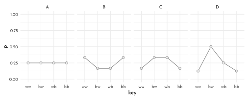
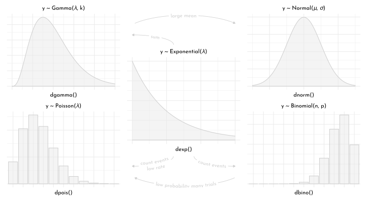
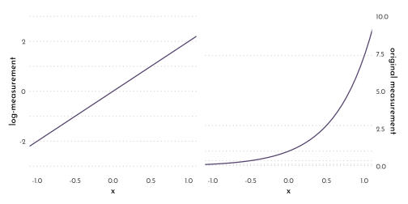

11 Rethinking: Chapter 10
Big Entropy and the Generalized Linear Model
by Richard McElreath, building on the Summaries by Solomon Kurz.
11.1 Maximum Entropy
Recall information entropy (\(H\)):
\[ H(p) = - \sum_{i} p_{i}~log~p_i \]
data_bucket <- tibble(
case_id = LETTERS[1:5],
p = list(
c(0,0,10,0,0),
c(0,1,8,1,0),
c(0,2,6,2,0),
c(1,2,4,2,1),
c(2,2,2,2,2)
),
ways = c(1, 90,1260,37800, 113400),
log_ways = log(ways)/10) %>%
mutate(p_norm = map(p, .f = function(q){ q / sum(q)}),
entropy = map_dbl(p_norm, .f = function(q){ - sum( if_else(q == 0, 0, q * log(q))) }))p <- data_bucket %>%
unnest(p) %>%
group_by(case_id) %>%
mutate(bucket_idx = row_number()) %>%
ungroup() %>%
ggplot(aes(x = bucket_idx, y = p)) +
geom_bar(stat = "identity", color = clr0d, fill = fll0) +
geom_text(data = data_bucket, aes(x = 5.5, y = 11, label = ways),
hjust = 1, family = fnt_sel) +
geom_text(data = . %>% filter(p > 0),
aes(y = p + 1, label = p),
family = fnt_sel, color = clr0dd) +
facet_wrap(case_id ~ .) +
scale_y_continuous(breaks = seq(0,10, length.out = 5), expand = c(0,0)) +
coord_cartesian(ylim = c(0, 12)) +
theme(panel.grid.minor = element_blank(),
panel.grid.major = element_blank(),
axis.ticks.y = element_line(size = .2, color = clr_dark),
panel.border = element_rect(color = clr_dark, fill = "transparent"))
pg <- ggplotGrob(p)
p2 <- ggplot(data_bucket, aes(log_ways, entropy))+
geom_smooth(method = "lm", se = FALSE, color = clr_dark, linetype = 3, size = .6) +
geom_point(shape = 21, color = clr0d, fill = clr0, size = 2) +
geom_text(aes(y = entropy + .2 * c(1,1,-1,-1,-1), label = case_id),
family = fnt_sel) +
scale_y_continuous(position = "right")
pg$grobs[[which(pg$layout$name == "panel-3-2")]] <- ggplotGrob(p2)
pg$layout$t[[which(pg$layout$name == "panel-3-2")]] <- 18
cowplot::ggdraw(pg)
11.1.1 The Gaussian Family
The generalized normal distribution:
\[ Pr(y | \mu, \alpha, \beta) = \frac{\beta}{2\alpha \Gamma (1 / \beta) } e^{-(\frac{|y-\mu|}{\alpha})^\beta} \]
The normal distribution (\(\beta = 2\)) has largest entropy for a continuous distribution with a known variance.
alpha_per_beta <- function(beta, variance = 1) {
sqrt((variance * gamma(1 / beta)) / gamma(3 / beta))
}
beta_select <- c(1, 1.5, 2, 4)
p1 <- crossing(value = seq(from = -5, to = 5, length.out = 501),
beta = beta_select) %>%
mutate(mu = 0,
alpha = alpha_per_beta(beta)) %>%
mutate(density = (beta / (2 * alpha * gamma(1 / beta))) *
exp(1) ^ (-1 * (abs(value - mu) / alpha) ^ beta),) %>%
ggplot(aes(x = value, y = density, group = beta)) +
geom_area(aes(color = beta == 2, fill = after_scale(clr_alpha(color, .3))),
position = "dodge") +
scale_color_manual(values = c(`TRUE` = clr1, `FALSE` = clr0d), guide = "none") +
coord_cartesian(xlim = c(-4, 4))
p2 <- crossing(value = -8:8,
beta = seq(from = .9, to = 4.1, by = .01)) %>%
mutate(mu = 0,
alpha = alpha_per_beta(beta)) %>%
mutate(density = (beta / (2 * alpha * gamma(1 / beta))) *
exp(1) ^ (-1 * (abs(value - mu) / alpha) ^ beta)) %>%
group_by(beta) %>%
summarise(entropy = -sum(density * log(density))) %>%
ggplot(aes(x = beta, y = entropy)) +
geom_line(color = clr_dark) +
geom_segment(data = . %>% filter(beta %in% beta_select),
aes(x = beta, xend = beta, y = 0, yend = entropy,
color = beta == 2), linetype = 3) +
geom_point(data = . %>% filter(beta %in% beta_select),
aes(x = beta, y = entropy,
color = beta == 2,
fill = after_scale(clr_lighten(color))), shape = 21, size = 2) +
scale_color_manual(values = c(`TRUE` = clr1, `FALSE` = clr0d), guide = "none") +
xlab(expression(beta(i.e.*", "*shape))) +
coord_cartesian(ylim = c(1.34, 1.42))
p1 + p2
11.1.2 The Binomial Distribution
\[ Pr(y_{1}, y_{2}, ..., y_{n}|n,p) = p^{y}(1 - p)^{n-y} \]
Largest entropy if:
- two unordered events
- constant expected value
data_binom <- tibble(
distribution = LETTERS[1:4],
p = list(
rep(1/4, 4),
c(2/6, 1/6, 1/6, 2/6),
c(1/6, 2/6, 2/6, 1/6),
c(1/8, 4/8, 2/8, 1/8))) %>%
mutate(exp_val = map_dbl(p, function(p){ sum( p * c(0, 1, 1, 2))}),
entropy = map_dbl(p, function(p){ - sum( p * log(p) ) }))
data_binom#> # A tibble: 4 x 4
#> distribution p exp_val entropy
#> <chr> <list> <dbl> <dbl>
#> 1 A <dbl [4]> 1 1.39
#> 2 B <dbl [4]> 1 1.33
#> 3 C <dbl [4]> 1 1.33
#> 4 D <dbl [4]> 1 1.21data_binom %>%
unnest(p) %>%
group_by(distribution) %>%
mutate(x = row_number(),
key = factor(c("ww", "bw", "wb", "bb")[x],
levels = c("ww", "bw", "wb", "bb"))) %>%
ungroup() %>%
ggplot(aes(x = key, y = p)) +
geom_line(color = clr0dd, aes(group = distribution)) +
geom_point(color = clr0dd, fill = clr0, shape = 21, size = 2) +
facet_wrap(distribution ~ ., nrow = 1) +
coord_cartesian(ylim = c(0, 1))
p <- .7
( A <- c( ( 1 - p ) ^ 2,
p * ( 1 - p ),
( 1 - p ) * p,
p ^ 2 ) )#> [1] 0.09 0.21 0.21 0.49- sum( A * log(A) ) #> [1] 1.221729library(cli)
n <- 1e5
cli_progress_bar("Simulate |", total = n)
set.seed(42)
sim_p <- function( idx, G = 1.4 , n = n){
x123 <- runif(3)
x4 <- ( (G) * sum(x123) - x123[2] - x123[3] ) / ( 2 - G )
z <- sum( c( x123, x4 ) )
p <- c( x123, x4) / z
cli_progress_update(.envir = .GlobalEnv)
tibble(idx = idx,
H = -sum(p * log(p)),
p = list(p),
key = list(factor(c("ww", "bw", "wb", "bb"),
levels = c("ww", "bw", "wb", "bb"))))
}
H <- map_dfr(1:n, sim_p) %>%
mutate(rank = rank(H)) %>%
arrange(rank)
closest_to <- function(x, y){
dif = abs(y - x)
dif == min(dif)
}
d_H <- function(x){demp(x, obs = H$H, density.arg.list = list(adjust = .1))}
H_sub <- H %>%
mutate(closest_65 = closest_to(H, .65),
closest_85 = closest_to(H, .85),
closest_100 = closest_to(H, 1),
closest_120 = closest_to(H, 1.219),
density = d_H(H)) %>%
filter(closest_65 | closest_85 | closest_100| closest_120) %>%
dplyr::select(-starts_with("closest")) %>%
mutate(lab = LETTERS[4:1])
p1 <- H %>%
ggplot(aes(x = H)) +
geom_density(adjust = .1, color = clr0d, fill = fll0) +
geom_segment(data = H_sub, aes(xend = H, y = 0, yend = density),
color = clr1, linetype = 3)+
geom_point(data = H_sub, aes(y = density),
color = clr1, fill = clr_lighten(clr1), shape = 21, size = 2)+
geom_text(data = H_sub, aes(y = density + .5, label = lab),
color = clr1, family = fnt_sel) +
labs(y = "density")
p2 <- H_sub %>%
unnest(c(p, key)) %>%
ggplot(aes(x = key, y = p)) +
geom_line(color = clr0dd, aes(group = lab)) +
geom_point(color = clr0dd, fill = clr0, shape = 21, size = 2) +
facet_wrap(lab ~ ., nrow = 2) +
coord_cartesian(ylim = c(0, 1)) +
labs(x = NULL)
p1 + p2
H %>%
filter(H == max(H)) %>%
.$p %>% .[[1]] %>% round(digits = 5)#> [1] 0.08993 0.20986 0.21028 0.48993A#> [1] 0.09 0.21 0.21 0.4911.2 Generalized linear Models
tibble(x = seq(from = 0, to = 2, by = .01)) %>%
mutate(probability = .45 + x * .4) %>%
ggplot(aes(x = x, y = probability)) +
geom_rect(xmin = 0, xmax = 2,
ymin = 0, ymax = 1,
fill = clr0,
alpha = .1) +
geom_hline(yintercept = 0:1, linetype = 2, color = clr_dark) +
geom_line(aes(linetype = probability >= 1),
color = clr1,
size = 1) +
geom_line(data = . %>% filter(probability >= 1),
aes(y = 1),
size = 2/3, color = clr1) +
scale_y_continuous(breaks = c(0, .5, 1)) +
coord_cartesian(xlim = c(0, 2),
ylim = c(-.02, 1.22),
expand = 0) +
theme(legend.position = "none")
11.2.1 Meet the Family
p0 <- ggplot()+
stat_function(fun = function(x){dexp(x)}, xlim = c(0,3),
geom = "area", color = clr0d, fill = fll0)+
labs(subtitle = glue("y {mth('\U007E')} Exponential(*{mth('\U03BB')}*)"),
x = "dexp()") +
theme(axis.title.y = element_blank(),
plot.subtitle = element_markdown(hjust = .5))
p1 <- ggplot()+
stat_function(fun = function(x){dgamma(x, 4, 2)}, xlim = c(0,5),
geom = "area", color = clr0d, fill = fll0)+
labs(subtitle = glue("y {mth('\U007E')} Gamma(*{mth('\U03BB')}*, k)"),
x = "dgamma()") +
theme(axis.title.y = element_blank(),
plot.subtitle = element_markdown(hjust = .5))
p2 <- ggplot(tibble(x = 0:10,
y = dpois(x,lambda = 2.5))) +
geom_bar(aes(x = as.factor(x), y = y),
stat = "identity",color = clr0d, fill = fll0)+
labs(subtitle = glue("y {mth('\U007E')} Poisson(*{mth('\U03BB')}*)"),
x = "dpois()") +
theme(axis.title.y = element_blank(),
plot.subtitle = element_markdown(hjust = .5))
p3 <- ggplot()+
stat_function(fun = function(x){dnorm(x)}, xlim = c(-3,3),
geom = "area", color = clr0d, fill = fll0)+
labs(subtitle = glue("y {mth('\U007E')} Normal(*{mth('\U03BC')}*, *{mth('\U03C3')}*)"),
x = "dnorm()") +
theme(axis.title.y = element_blank(),
plot.subtitle = element_markdown(hjust = .5))
p4 <- ggplot(tibble(x = 0:10,
y = dbinom(x,size = 10, prob = .85))) +
geom_bar(aes(x = as.factor(x), y = y),
stat = "identity",color = clr0d, fill = fll0)+
labs(subtitle = glue("y {mth('\U007E')} Binomial(n, p)"),
x = "dbino()") +
theme(axis.title.y = element_blank(),
plot.subtitle = element_markdown(hjust = .5))
library(geomtextpath)
n <- 30
lab01 <- tibble(idx = 1:n,
tau = seq(0, pi *.5, length.out = n) %>% rev(),
x = sin(tau),
y = cos(tau),
lab = "sum") %>%
bind_rows(tibble(idx = 1:n,
tau = seq(-pi * .3, pi *.3, length.out = n),
x = (sin(tau) + .85) * 1.5,
y = cos(tau)*2 + 1,
lab = "large mean"))
a1 <- ggplot(mapping = aes(x = x, y = y, group = lab )) +
geom_path(data = lab01 %>% filter(idx >= n-1), color = clr0d,
arrow = arrow(type = "closed",length = unit(4, "pt"))) +
geom_textpath(data = lab01 %>% filter(idx < n),
aes(label = lab), color = clr0d,
family = fnt_sel,
size = 3.5,
rich = TRUE,
linewidth = .4,
hjust = .5) +
theme_void()
lab02 <- tibble(idx = 1:n,
tau = seq(0, pi *.5, length.out = n) %>% rev(),
x = sin(tau),
y = cos(tau),
lab = "count events\nlow rate") %>%
bind_rows(tibble(idx = 1:n,
tau = seq(-pi * .3, pi *.3, length.out = n) %>% rev(),
x = (sin(tau) + .85) * 1.5,
y = cos(tau)*2 + 1,
lab = "low probability many trials"))%>%
bind_rows(tibble(idx = 1:n,
tau = seq(0, pi *.5, length.out = n) %>% rev(),
x = -sin(tau) + 2.5,
y = cos(tau),
lab = "count events"))
a2 <- ggplot(mapping = aes(x = x, y = y, group = lab )) +
geom_path(data = lab02 %>% filter(idx >= n-1), color = clr0d,
arrow = arrow(type = "closed",length = unit(4, "pt"))) +
geom_textpath(data = lab02 %>% filter(idx < n),
aes(label = lab), color = clr0d,
family = fnt_sel,
size = 3.5,
rich = TRUE,
linewidth = .4,
hjust = .5) +
theme_void()+
scale_y_reverse()layout <- "AFD\nACD\nBCE\nBGE"
p1 + p2 + p0 + p3 + p4 + a1 + a2 +
plot_layout(design = layout) &
theme(axis.text = element_blank())
11.2.2 Linking linear models to distributions
For this, we need a link function - two commonly used ones are:
The Logit Link. Consider the model:
\[ \begin{array}{rclr} y_{i} & \sim & Binomial(n, p_{i}) & \textrm{[likelihood]}\\ \textrm{logit}(p_{i}) & = & \alpha + \beta x_{i} & \textrm{[linear model]}\\ \end{array} \]
with the logit function being defined as
\[ \textrm{logit}(p_{i}) = \textrm{log} \frac{p_{i}}{1 - p_{i}} \]
So, the statement here claims that
\[ \textrm{log} \frac{p_{i}}{1 - p_{i}} = \alpha + \beta x_{i} \]
which can be solved for \(p_{i}\) to give
\[ p_{i} = \frac{\textrm{exp}(\alpha + \beta x_{i})}{1 + \textrm{exp}(\alpha + \beta x_{i})} \]
which is known as the logistic or inverse-logit.
alpha <- 0
beta <- 4
lines <- tibble(x = seq(from = -1, to = 1, by = .25)) %>%
mutate(`log-odds` = alpha + x * beta,
probability = exp(alpha + x * beta) / (1 + exp(alpha + x * beta)))
beta <- 2
d <- tibble(x = seq(from = -1.5, to = 1.5, length.out = 50)) %>%
mutate(`log-odds` = alpha + x * beta,
probability = exp(alpha + x * beta) / (1 + exp(alpha + x * beta)))
p1 <- d %>%
ggplot(aes(x = x, y = `log-odds`)) +
geom_hline(data = lines,
aes(yintercept = `log-odds`),
color = clr0d, linetype = 3) +
geom_line(size = .6, color = clr1) +
coord_cartesian(xlim = c(-1, 1)) +
theme(panel.grid = element_blank())
p2 <- d %>%
ggplot(aes(x = x, y = probability)) +
geom_hline(data = lines,
aes(yintercept = probability),
color = clr0d, linetype = 3) +
geom_line(size = .6, color = clr1) +
coord_cartesian(xlim = c(-1, 1)) +
theme(panel.grid = element_blank())
p1 + p2
The Log Link. Consider the model:
\[ \begin{array}{rclr} y_{i} & \sim & Normal(\mu, \sigma_{i}) & \textrm{[likelihood]}\\ \textrm{log}(\sigma_{i}) & = & \alpha + \beta x_{i} & \textrm{[linear model]}\\ \end{array} \]
Solving this for \(\sigma_{i}\) results in
\[ \sigma_{i} = \textrm{exp}(\alpha + \beta x_{i}) \]
alpha <- 0
beta <- 2
lines <- tibble(`log-measurement` = -3:3,
`original measurement` = exp(-3:3))
d <- tibble(x = seq(from = -1.5, to = 1.5, length.out = 50)) %>%
mutate(`log-measurement` = alpha + x * beta,
`original measurement` = exp(alpha + x * beta))
p1 <- d %>%
ggplot(aes(x = x, y = `log-measurement`)) +
geom_hline(data = lines,
aes(yintercept = `log-measurement`),
color = clr0d, linetype = 3) +
geom_line(size = .6, color = clr1) +
coord_cartesian(xlim = c(-1, 1)) +
theme(panel.grid = element_blank())
p2 <- d %>%
ggplot(aes(x = x, y = `original measurement`)) +
geom_hline(data = lines,
aes(yintercept = `original measurement`),
color = clr0d, linetype = 3) +
geom_line(size = .6, color = clr1) +
scale_y_continuous(position = "right", limits = c(0, 10)) +
coord_cartesian(xlim = c(-1, 1)) +
theme(panel.grid = element_blank())
p1 + p2
library(rlang)
chapter10_models <- env(
)
write_rds(chapter10_models, "envs/chapter10_models.rds")11.3 Homework
There is no homework in chapter 10 😄.
11.4 {brms} section
There are no new model in this chapter that would need to be translated to {brms} 🤷.